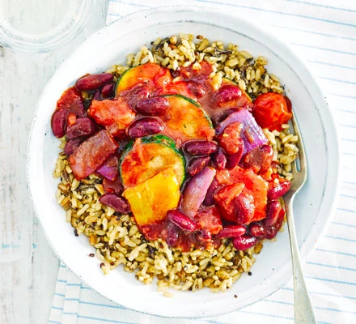

Veggie Chilli

Description
The easiest chilli you'll ever make, with ready-to-eat grains, kidney beans in chilli sauce and summer veggies - it's 4 of your 5-a-day too!
Ingredients
- 400g pack oven-roasted vegetables
- 1 can kidney beans in chilli sauce
- 1 can chopped tomatoes
- 1 ready-to-eat mixed grain pouch
Steps
- Heat oven to 200C/180C fan/ gas 6. Cook the vegetables in a casserole dish for 15 mins. Tip in the beans and tomatoes, season, and cook for another 10-15 mins until piping hot. Heat the pouch in the microwave on High for 1 min and serve with the chilli.